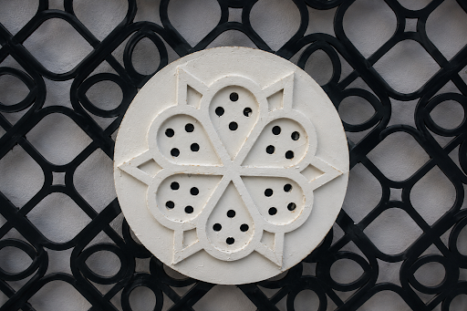
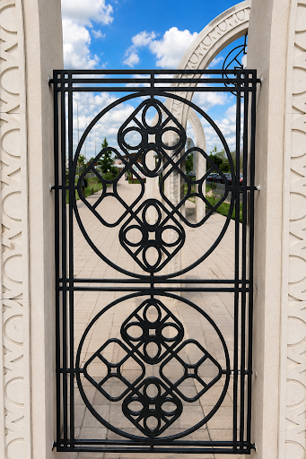
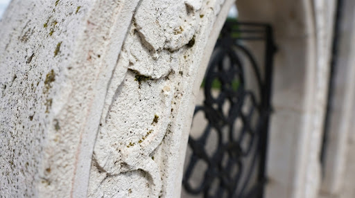

Кейс Болгар: Масштаб и детали
Материал имеет значение.
Исполнение определяет результат.
Архитектурный комплекс в Болгаре — это манифест структурной целостности. Каждый элемент спроектирован с учетом экстремальных допусков, где бетон превращается в кружево, сохраняя при этом монументальную прочность, присущую civil engineering высшего разряда.
Технические характеристики
Ультравысокопрочный фибробетон (UHPC)
Структурная нагрузка
Усиленное армирование 99 MPa
Сложность
Архитектурная деталь класса 4


Технологическая сложность
Реализация ажурных решеток и тонкостенных орнаментов потребовала разработки уникальных опалубочных систем. Состав смеси 99 MPa обеспечивает текучесть, необходимую для заполнения форм любой сложности, без потери структурной прочности.
ФАЗА: АРХИТЕКТУРНЫЙ МОНОЛИТ

Целостность в каждом кубическом миллиметре
"Наша задача — стереть грань между техническим расчетом и визуальным искусством. Болгар стал полигоном для испытания пределов современного бетона."
0.15mm
ДОПУСК
99 MPa
ПРОЧНОСТЬ
50 лет
ГАРАНТИЯ